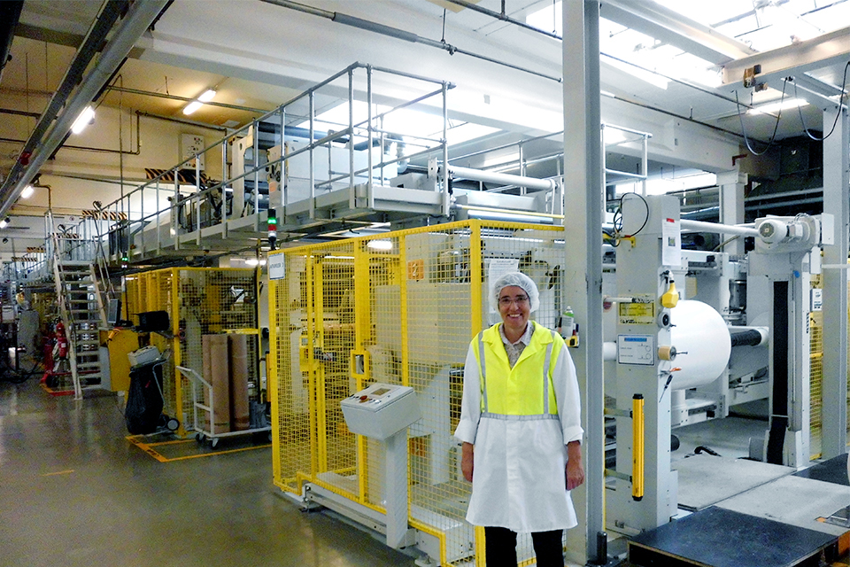
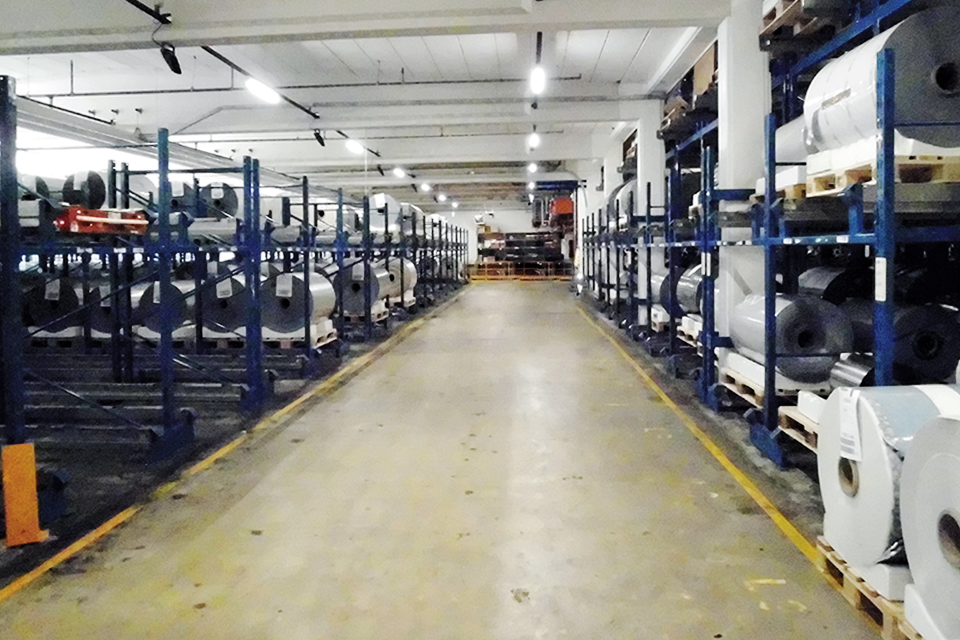
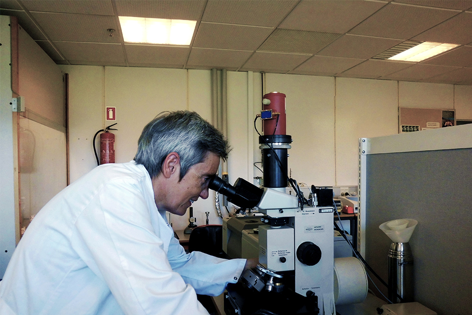

{kind=link}
Patent dateIssued Jan 12, 2000 Patent issuer and numberus US 06165571.
ABOUT ME
My name is Kirsten Lykke I have a solid experience from the flexible packaging and lamination adhesive industry. My educational background is a Master of Science in Chemical Engineering and I am Black belt six sigma certified as well. Having collaborated with many producers and users of flexible laminates in Europe I find that there is the need for an independent Flexible packaging consultant.
Services
I am offering my consultancy within the following areas:

I look forward helping you to develop sustainable laminates with break through properties. I have 20 years of experience as a development manager in the flexible packaging industry.
Innovation and development
Click on image to open

Are you struggling with a difficult technical issue in your production of flexible laminates? I can help you identify the root cause, implement preventive actions and handle an eventual claim related to the specific raw materials. Please feel free to contact me.
Do you have technical issues with the laminates you are using on your packaging line? I can identify the root cause of the laminate failure and handle an eventual claim. Please feel free to contact me.
Technical trouble shooting and handling of claims
Click on image to open

Cost savings are something that many converters are longing to get! I will help you go through your production setup and suggest realistic cost saving projects. I will work with you through the projects to achieve the savings. For one of my current customers I have achieved significant cost savings by minimizing waste in the production and by specifying the optimum adhesive strategy.
Cost savings
Click on image to open

Are you struggling with printing issues, washboard effects, pleads and channels in your production of laminates? Please feel free to ask for my advice.
Optimization of the production
Click on image to open

By using the optimum packaging material you will achieve the right shelf life of your food product, reduce food waste as well as packaging waste. I would be happy to help you to specify the optimum sustainable packaging solution. Please don’t hesitate to contact me.
Specifying flexible packaging materials
Click on image to open

Involving an analytical laboratory or institute in finding the root cause to a specific packaging problem can be very expensive.
I will help you identify the necessary test and analysis needed and thereby reduce your expenses significantly.
Do you want to update your knowledge about flexible packaging? I offer tailor made training sessions for both converters and brand owners to fit your company’s specific needs. Please feel free to contact me.
Testing, analyzing and training programs
Click on image to open
Patents
I am the holder of the following patents:
{kind=link}
Recommendations
Please place the curser over the text
We have had the pleasure to collaborate closely with Kirsten Lykke Consulting on numerous projects incl. more sustainable and ready-to-recycle flexible packaging.
Summing up key impressions experienced through complex multiple problem solving cases and continuous improvement projects the following comes to mind:
Highly competent;
Fact and data driven;
Methodical;
Eyes on what matters;
Mastering cracking highly complex problems;
Keeps drilling to true root cause is identified, verified and corrected;
Broad and deep knowledge;
Ability to deep-dive into new areas to gain thorough understanding quickly.
Passing on our high regards the expertise within packaging that Kirsten Lykke Consulting represents. A major contributor on the technical side of the organization leading to commercial benefits
Tom Korsholm
Plant Technical Manager at Amcor Flexibles
February 3, 2022,Kirsten worked as a consultant together with Tom.
Unbelievable dedication and engagement, constant desire of in depth knowledge in her field and a great deal of perfectionism describe the best Kirsten!
I had the unquestionable priviledge to start working with Kirsten 2 years ago on a project and eversince she became the "must have" in any of the project teams I was setting up. Those involved from market, product portfolio and growth tactics analyses, through competetive benchmarking excercises, to making decissions on company's innovation strategy. In each of the cases Kirsten remained not only one of the most knowledgable team members, but most importantly the hardest working and most dedicated.
In one of the most significant examples, Kirsten led a segment analysis and was the single key contributor to shaping an important innovation project.
Despite (or maybe thanks to) her limited experiense in sales she was always trying to get an in-depth understanding of what her customers need, which also was reflected in her results.
People that are not interrested in "half-means" and rather more in "achieving the outstanding" will really enjoy working with Kirsten. She is never shy to speak up her opinion in a team, while being very respectful to the opinion of others, which led in very valuable discussions during our cooperation. Her work ethics are at the highest possible standards and she trully treats the company she works for as if it was her own!
Jaroslaw Jelinek
January 7, 2018, Kirsten worked with Jaroslaw in the same group
Kirsten was a critical player in the development and creation of an in-line degassing valve peel-seal that was necessary for the launch of plastic canisters for coffee. The huge challenge for Procter and Gamble was to find a way that coffee could off-gas after packaging, allowing a change from the current metal can. Kirsten's knowledge of the entire production process from the chemistry, to the printing, to the final multi-layered sealant was the key to the successful solution.
Kirsten's attention to detail and quality enabled her to ensure the six-sigma principles were in place to produce consistent product. Kirsten played a key role in the successful role-out of this new product, which won the DuPont Packaging Of The Year Award!! Kirsten could be depended on to exceed expectation throughout the development and was a joy to work with! Thank you Kirsten!
Pat Searle
Purchases Consultant, Searle Spencer Group CEO
February 24, 2015, Pat worked with Kirsten but at different companies
Having worked with Kirsten for approx. 6 years, I know her as a structured, detailed focused and collaborative colleague. Kirsten's relentless "can do" attitude makes sure thisngs gets done, and at the same time always makes sure to do needed followups to ensure steady state on projects, prior to handover to process owners. Furthermore, Kirstens scientific approach to projects and developements, ensures consistancy in delivering reults.
Jesper Jensen
Head of field operations EMEA at Electrolux
February 21, 2015, Jesper worked with Kirsten in different groups
I have worked closely with Kirsten Lykke at LEGO in Billund, Denmark in several projects. Kirsten was the project manager and in all projects she showed a big commitment and produced high quality results. In addition, she is extremely organized and reliable and she cooperates well at all organizational levels and across cultures. Kirsten has my highest recommendation.
Per-Allan Hansen
Senior Quality Engineer at LEGO Group
January 14, 2015, Per-Allan worked with Kirsten in different groups
Kirsten is very knowledgeable, absolutely trustworthy, and an excellent person to partner with for a joint project. I consider myself fortunate to have had a chance to collaborate with her.
Grant Kenion
Scientific Fellow at Henkel Corporation
February 17, 2013, Grant worked with Kirsten but at different companies
Kirsten has long year experience in the converting industry and shows a deep understanding how to develop
innovative packagings, combining different requirements and technologies, for the flexible food packaging market.
She is a pleasure to work with and always very supportive.